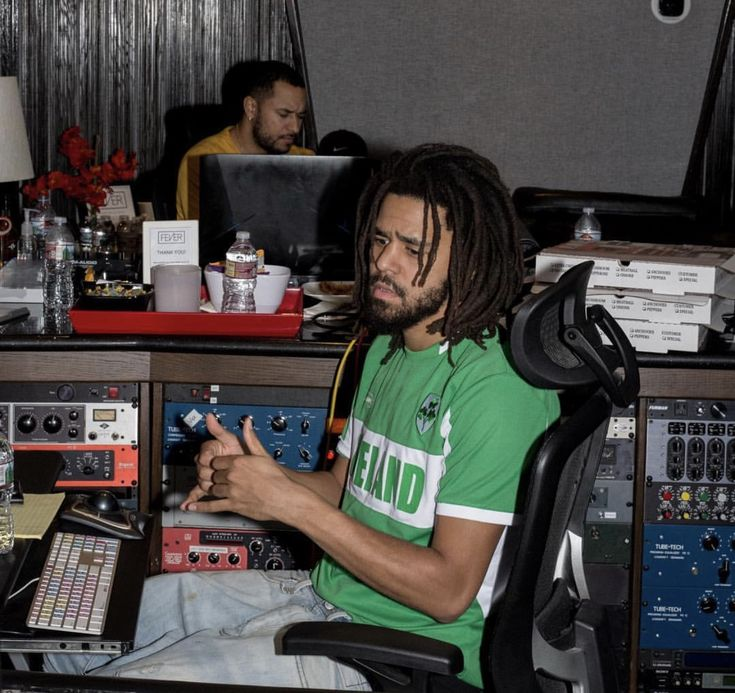

Cole World
October 10, 2026 by Menelik

This is my favorite concious hip hop artist, J Cole. His music is very inspirational
and he's a very good storyteller and poet.
He dives into R&B and other genres which makes his discography even more refreshing.
Top 3 R&B artists out there
October 12, 2026 by Menelik
SiR has to be one of the best R&B artists out there and I feel like he needs more appreciation.
His music always has this the right vybe depending on the song and the occasion.
His hit album Chasing Summer just gets better and better every listen! My favorites on it are
New Sky, mood and La Lisa.